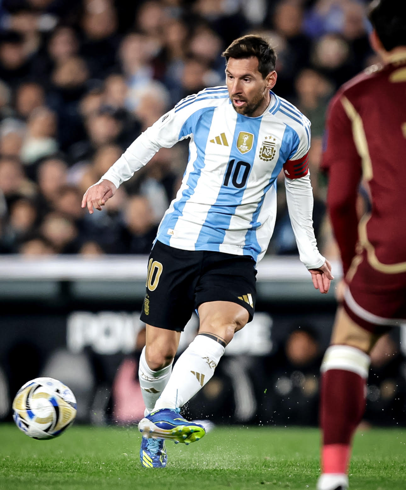
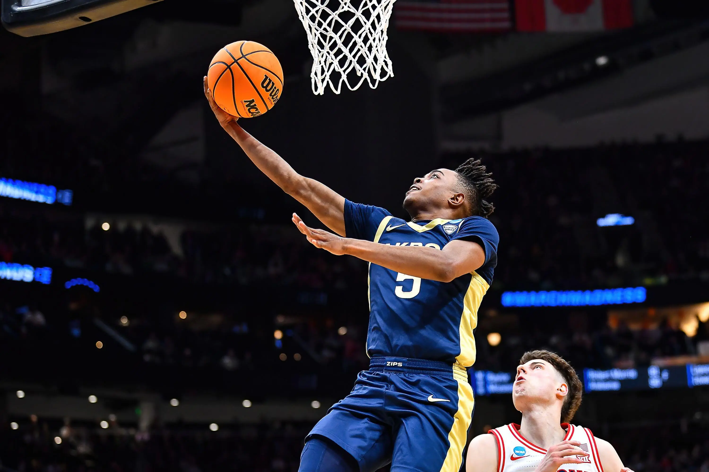

Modalidades esportivas
Sejam bem vindos a nossa página, aqui abordaremos os 3 principais tipos de Modalidades atualmente, (futebol, vôlei, basquete)
Futebol
O futebol é o esporte coletivo mais popular do planeta. Segundo dados da Federação Internacional de Futebol (Fifa), cerca de 270 milhões de pessoas atuam em atividades diretamente relacionadas ao esporte (seja como jogador, seja como árbitro).
O futebol moderno surgiu na Inglaterra durante o século XIX, mas relatos históricos apontam que já existiam práticas esportivas parecidas. Atualmente, grandes competições de futebol são organizadas todos os anos por diferentes entidades futebolísticas (nacionais, continentais ou internacionais).
Futebol na história:
Como vimos, o futebol moderno surgiu apenas no século XIX, mas sabe-se que milhares de anos atrás já eram praticados pela humanidade esportes com características semelhantes. O vestígio de prática similar ao futebol mais antigo do qual se tem conhecimento remonta à China de 3000 a.C. Mas os registros históricos não remetem apenas aos chineses. Existem evidências de esportes semelhantes ao futebol sendo praticado por japoneses, egípcios, além de gregos e romanos antigos. Também há registros em diferentes povos mesoamericanos (da região da Mesoamérica, atual México e América Central). Eduardo Galeano traz relatos de algo parecido com o futebol sendo praticado na Inglaterra durante a Idade Média. O jornalista uruguaio destaca que, no século XIV, o rei Eduardo II condenava essa prática esportiva. Outros reis ingleses como Eduardo III, Henrique IV e Henrique VI chegaram a proibir a prática do esporte.
Regras:
O futebol é disputado por duas equipes de 11 jogadores em um campo retangular, com o objetivo de fazer gols. A partida dura 90 minutos (dois tempos de 45). Apenas o goleiro pode usar as mãos, desde que dentro da sua área. Faltas e condutas antidesportivas são punidas com cartões ou pênaltis
Por fim:
Atualmente, o futebol está em todos os países e é praticado diariamente por diversas pessoas, é um esporte marcado por ajudar vidas e também celebrar a união entre povos.

Vôlei:
O voleibol é um esporte coletivo em que duas equipes de 6 jogadores disputam pontos arremessando uma bola por cima de uma rede central. O objetivo principal é fazer a bola tocar o chão na quadra do adversário ou forçá-lo a cometer um erro. Além disso, A partida não tem tempo de duração, sendo disputada em "sets". Ganha o jogo a equipe que vencer 3 sets.
Pontuação:
Os quatro primeiros sets vão até 25 pontos. Se houver empate em 2 a 2, o set (tie-break) vai até 15 pontos. Em todos os casos, é necessário abrir uma diferença mínima de 2 pontos para fechar o set.
Por fim:
O volei é uma modalidade desportiva que explora diversos movimentos corporais, podendo não só auxiliar no desenvolvimento motor de seus praticantes quanto no fortalecimento da auto-estima, cooperativismo, disciplina, organização e sendo também um meio de socialização entre os alunos de diferentes gêneros.

Basquete:
O basquetebol é um esporte coletivo onde duas equipes de cinco jogadores em quadra disputam para pontuar arremessando uma bola em cesta elevada (o aro). Vence o time que fizer o maior número de pontos no tempo regulamentar.
Dinâmica do jogo:
O basquetebol é um esporte coletivo onde duas equipes de cinco jogadores em quadra disputam para pontuar arremessando uma bola em uma cesta elevada (o aro). Vence o time que fizer o maior número de pontos no tempo regulamentar.
Pontuação:
As cestas podem ter valores diferentes dependendo da distância em que o arremesso foi feito:
- 3 pontos: Arremessos feitos por trás da linha de três pontos.
- 2 pontos: Arremessos realizados dentro da área delimitada pela linha de três.
- 1 ponto (lance livre): Cobranças após faltas específicas ou técnicas.
Por fim:
O basquete promove a integração social, o trabalho em equipe e a disciplina. Por exigir cooperação constante em quadra, o esporte desenvolve habilidades de comunicação e liderança, além de afastar jovens de situações de vulnerabilidade através de projetos de inclusão.
